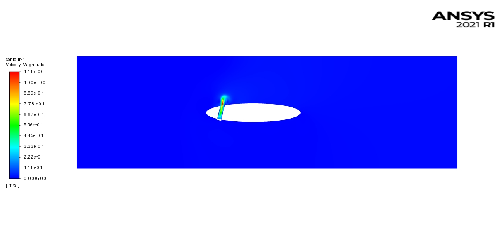
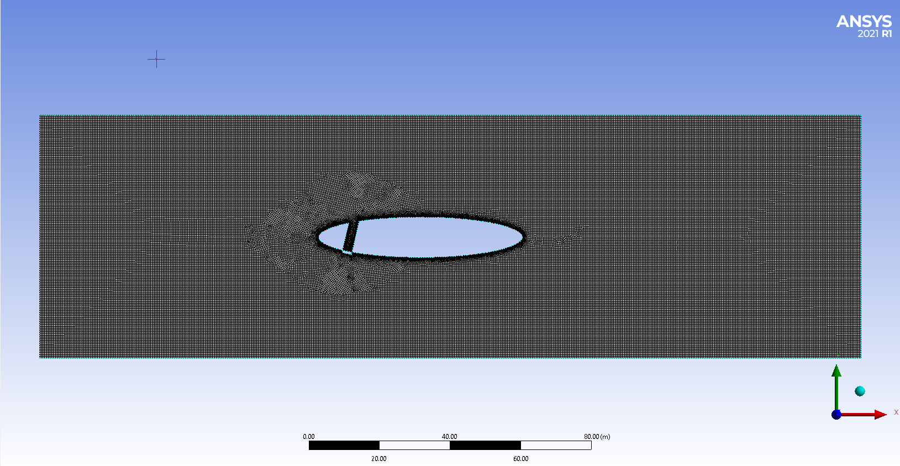
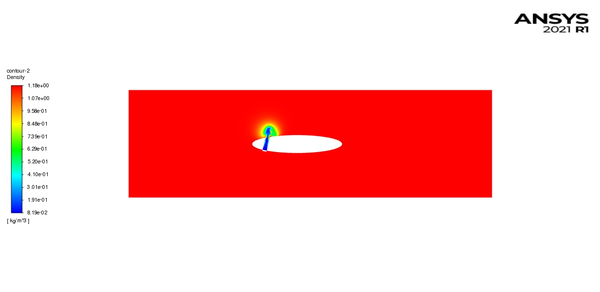

PROJECT
Ionic Breeze

Combining Ionic Wind Propulsion and Aerodynamic Flow Control | University of Cincinnati | Capstone research project | Fall 2021

alt="Velocity Contour of the flow with AFC in the front of the wing">Project Overview
Independent CFD study exploring whether injecting a lighter gas (hydrogen, as a simplified stand-in for ionic-wind-driven flow) through a gap in an airfoil (an aerodynamic flow control (AFC) concept) could enhance lift and thrust. Simulated the gap positioned at both the front and back of the wing in Fluent (species transport + k-ω SST, transient), and compared the resulting lift/thrust generation and flow symmetry between configurations. Results suggested a lift/thrust benefit, particularly with the front-mounted gap, but the report is explicit that this was a first-pass study with a simplified model, intended as a starting point rather than a validated result.

